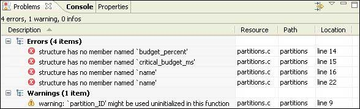

The Problems view provides you with a list of errors and warnings related to your projects. These are typically syntax errors, typos, and other programming errors identified by the compiler:

The Problems view.